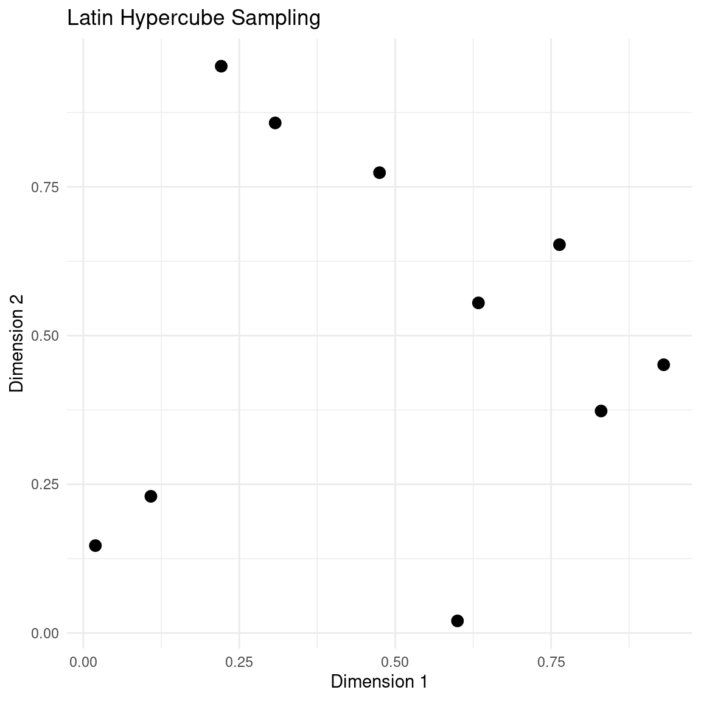
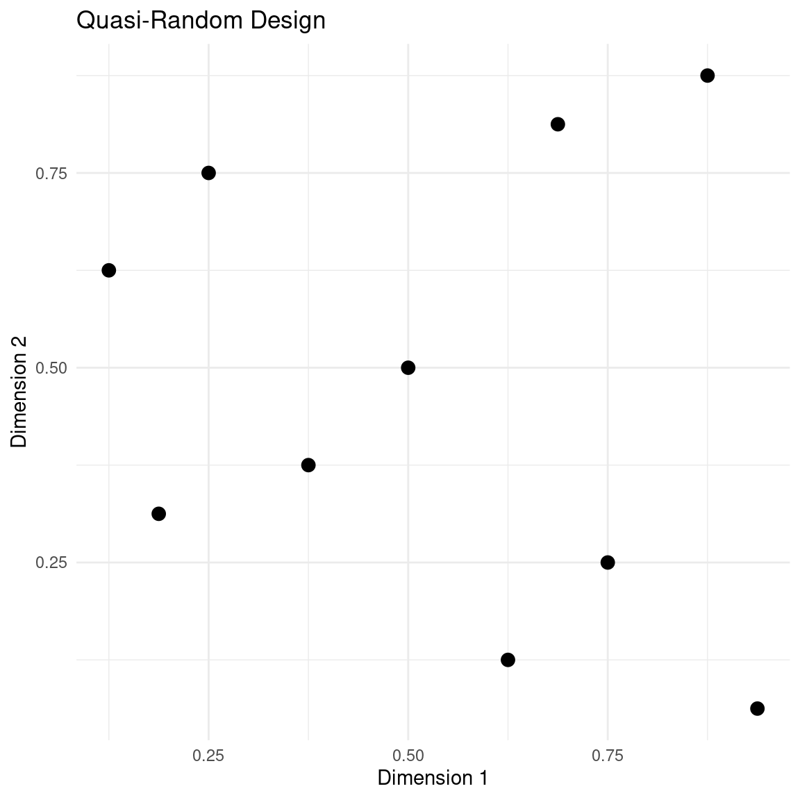
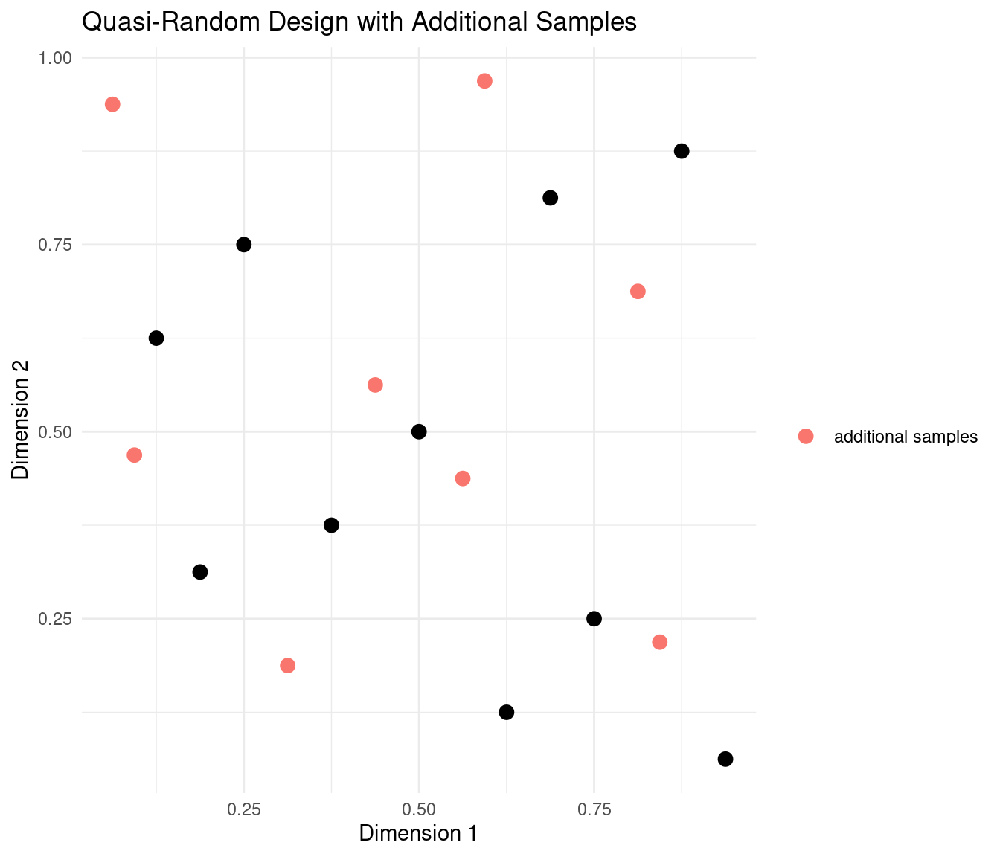
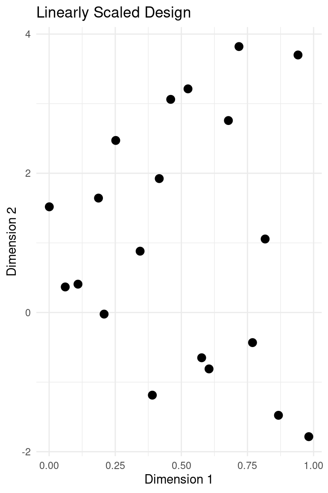
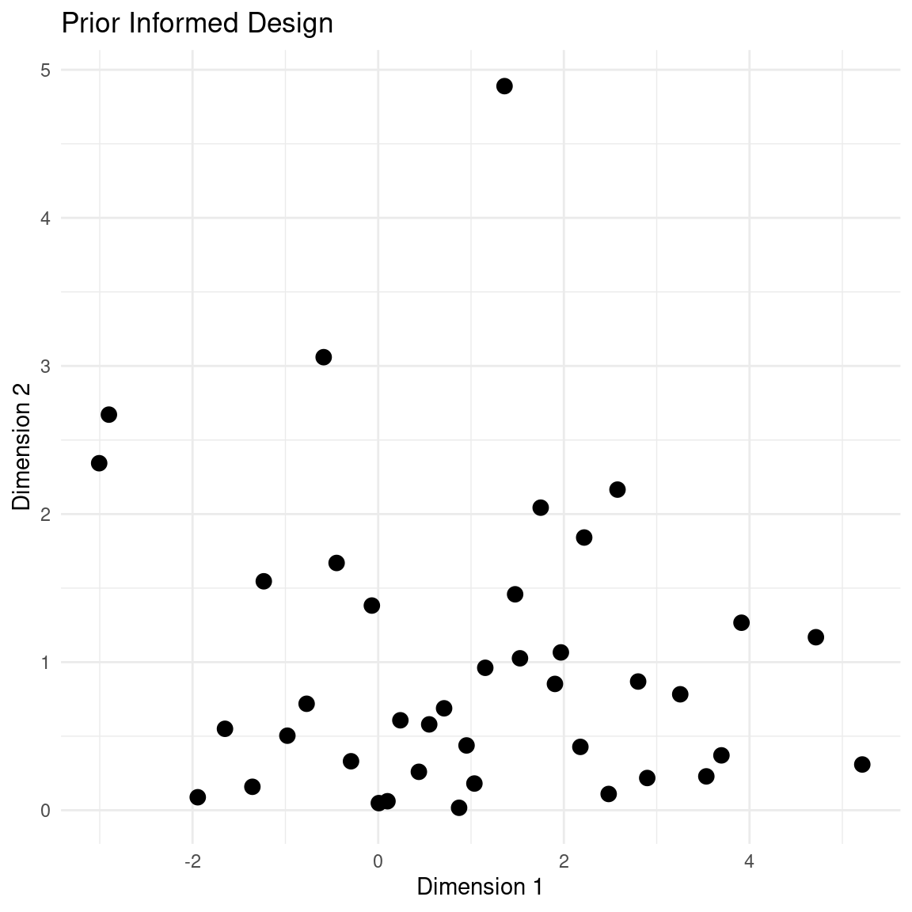
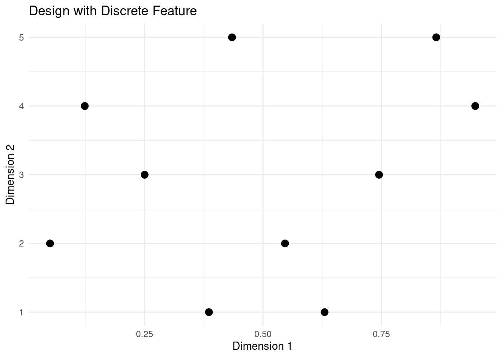
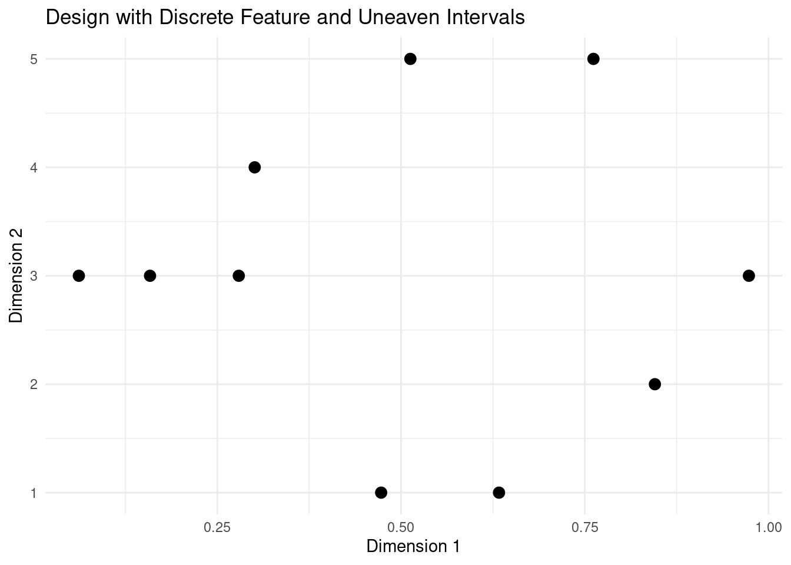
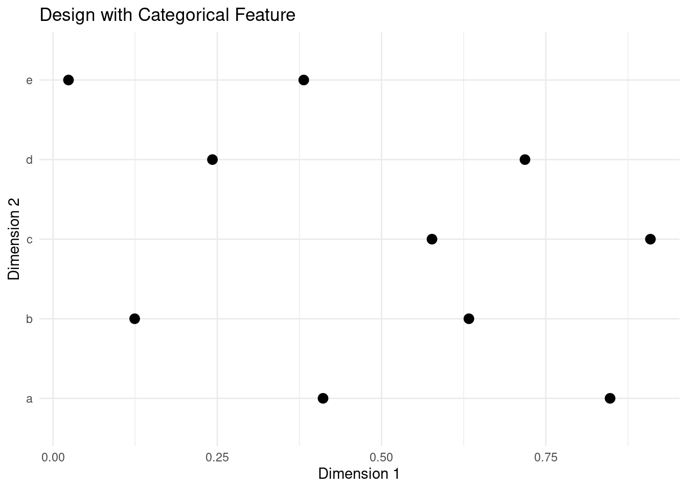
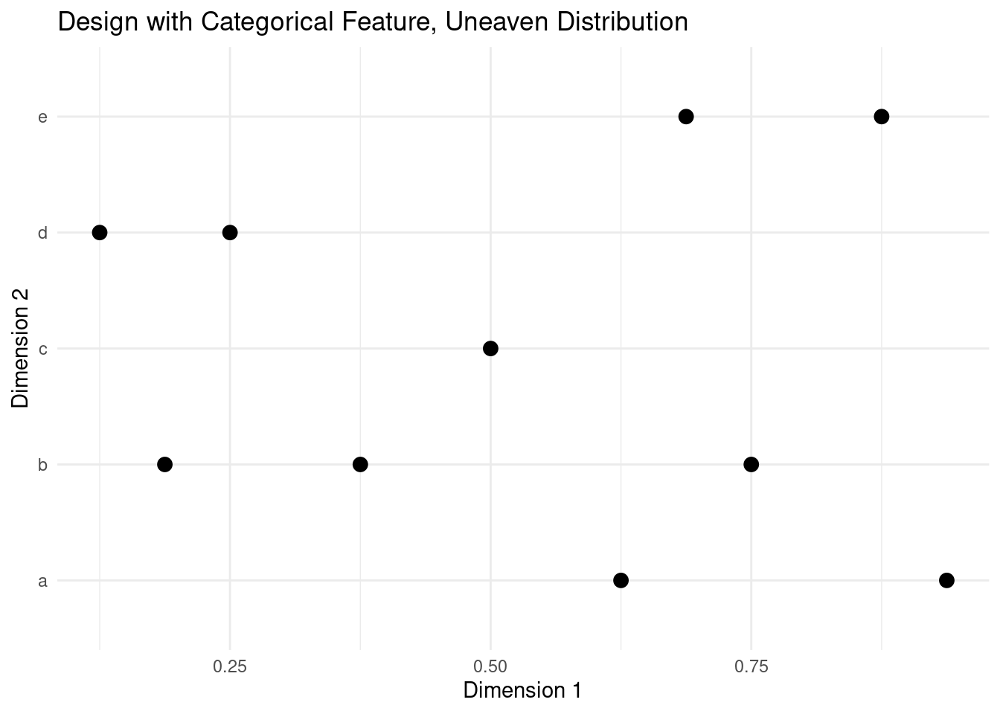

Initial Designs for Bayesian Optimisation
Bayesian optimisation is a powerful optimisation technique for black-box functions and processes with expensive evaluations. It is popular for hyperparameter tuning in machine learning, but has many real-world applications as well.
One of the key components of Bayesian optimisation is the initial experiment design, which forms the foundation for the first fit of the surrogate model. In this post, we will discuss the importance of initial experiment designs in Bayesian optimisation and dive into a few different ways to sample such initial designs.
Along with the discussion are example implementations in R.
library(ggplot2)
library(magrittr)
set.seed(4444)Initial Experiment Designs
Bayesian optimisation works by constructing a surrogate probabilistic model, typically a Gaussian process, of the objective function. The surrogate model is then used to guide the search for an optimum through sequential experimentation. The initial experiment design influences this process in two major ways: it provides initial data points for fitting the surrogate model and it is the initial trade off between exploration and exploitation.
In the initial design, we decide on a set of n samples \mathbf{X} = \{\mathbf{x}_1, \dots, \mathbf{x}_n\}. Each point, \mathbf{x}, is somewhere in the search space, \mathcal{X} \in \mathbb{R}^d, with dimensionality d. Ideally, we want to restrict the optimisation to a subset of \mathbb{R}^d and the initial design can help achieve that by keeping the samples within a realistic range. For the base designs discussed here, the search space \mathcal{X} = [0,1]^d is assumed. It is a good idea to normalise the input dimensions, but when normalised inputs are not an option, the range [0,1] can easily be scaled to a broader range, as discussed later.
Considering that the experimental budget is limited and that it is expensive to evaluate the objective function, the number of initial training samples should be limited. However, considering that the surrogate models generally are not great for extrapolation, the number of initial samples should not be too small either.
In general, the initial training data should be chosen to provide a good representation of the objective function. This means that the data should be chosen to cover the range of each input dimension. The data should also include inputs that are expected to be both good and bad performers.
An initial design might not always be necessary. If the Gaussian process was defined with a very strong prior, then it could be applied to generate experiments right away. For some processes, historical data might be available to get the experimentation started. Previous experience, experiments, or datasets might also be useful for initialising Bayesian optimisation [1].
Most often though, we do not really know where to start. At best, we might have a vague idea of the general effect of our input features on the measured output. In these cases, we can apply a design, so let’s look at some examples.
An Example Case
To demonstrate each design, we imagine a situation where we are doing Bayesian optimisation on an objective process with two input dimensions. We have decided that we want to take 10 initial samples.
# 2D design with 10 samples
n <- 10
d <- 2We also define a simple plot to visualise the design.
plot_design <- function(samples, title = "") {
data.frame(samples) %>%
ggplot() +
geom_point(aes(x = X1, y = X2), size = 3) +
theme_minimal() +
labs(
title = title,
x = "Dimension 1",
y = "Dimension 2"
)
}Now we are ready to look at our first design.
Random Sampling
The first, and arguably most simple, example of an initial design is Random Sampling. As the name suggests this design is completely random. Each dimension for each point is simply sampled from the uniform distribution [2]
\mathbf{x} \sim \text{Unif}(0, 1) The implementation is just a single line:
random_sampling <- function(n, d) matrix(runif(n * d), n, d)Random sampling represents a focus on exploration in the face of uncertainty. The main advantage of the random design is its ease of implementation, but it is also important to note that it is trivial to add additional samples to this design. The main drawback is that it is not guaranteed to efficiently sample the search space - there is a chance of points with close proximity, which is a waste we usually cannot afford in Bayesian optimisation. A Latin Hypercube Design can remedy this drawback.
Random Sampling in 2D
Here is a random sampling design for our imagined case.
samples <- random_sampling(n, d)
plot_design(samples, "Random Sampling")
The main thing to notice is the clusters of points and large swaths of empty space. This seems a bit wasteful, when each evaluation of the objective function is expensive.
Latin Hypercube Sampling
Latin Hypercube Sampling (LHS) is a stratified sampling technique that ensures a balanced distribution of samples across the search space. The key idea behind LHS is to divide each dimension of the search space into equally sized intervals and randomly sample one point from each interval. LHS still samples each point from a uniform distribution, but restricts the intervals for each point [2].
Given a search space with d dimensions or features, we want to sample n points, such that they satisfy a Latin Hypercube of evenly spaced intervals.
We do this by dividing each dimension into n equally spaced intervals. Then, for each dimension, we sample a random permutation of the numbers 1, ..., n and the resulting sequence determines which interval of that dimension is sampled for each of the n samples. This ensures that each interval in each dimension is sampled exactly once. Finally a sample is drawn from each of the chosen intervals.
Let x_{j,i}, j = 1, ..., n, i = 1, ..., d be the i^{\text{th}} dimension of the j^{\text{th}} sample. Let \mathbf{\pi}_i, i = 1, ..., d be d independent random permutations of the numbers \{1,...,n\}, then
\mathbf{x}_{i,:} = \frac{\mathbf{\pi}_i - 1 + \mathbf{\nu}_i}{n}
Where \mathbf{x}_{i,:} is the i^{\text{th}} dimension of all samples, and
\mathbf{\nu}_i \sim \text{Unif}(0, 1)
Here is an implementation of LHS:
#' Latin Hypercube Sampling
#'
#' @param n <int> number of samples
#' @param d <int> number of features
#'
#' @return matrix of shape (n,d)
latin_hypercube_sampling <- function(n, d) {
samples <- matrix(nrow = n, ncol = d)
for (i in 1:d) samples[, i] <- sample(n) + runif(n)
(samples - 1) / n
}LHS ensures a uniform coverage of the search space, which is great for efficient exploration. Furthermore, it is relatively simple to implement, so it is an easy place to start.
A large drawback of LHS is that additional points cannot be sampled after the design is complete. Imagine a scenario where we are about to do Bayesian optimisation, but we chose an initial number of samples, n, that was too small, so we are unable to fit a useful surrogate model. We have already done the n samples and they are good, but we would like to add just a few more, m, initial samples before starting optimisation in earnest. Unfortunately, we cannot add the m points to the original LHS. Neither is the LHS of size n a subset of the LHS of size n + m. To get a LHS of size n + m, we would have to create an entirely new design. The intuition for this is that, as part of the design, we split each dimension into n equally spaced intervals, so we cannot retroactively split them into n + m, once the n samples are done. Another way to think about it is that the design is generated in a for loop over each dimension, so the total number of samples must be known from the beginning. In practice, we could use some space-filling criterion or just random sampling to generate the m points, but they would not fit in the Latin Hypercube.
LHS in 2D
Here is LHS applied to our running example:
samples <- latin_hypercube_sampling(n, d)
plot_design(samples, "Latin Hypercube Sampling")
The main thing to notice in this design is the neat stratification of each dimension.
Quasi-Random Design
The pure random sampling design struggled to provide an efficient exploration of the search space. The LHS design had guaranteed space filling but had the drawback of not being expandable. What we might want is a space filling design that we can keep adding points to if necessary.
To create such a design, we turn to quasi random numbers. Quasi random numbers are deterministic sequences of numbers that uniformly fill a space. A quasi random number generator will sequentially generate a set of numbers in such a way that the unit cube is filled evenly. Unless randomness is added, the generator will produce the same sequence when restarted. Even if the generator was stopped, we can start it from where it left off and continue generating points that are compatible with the initially generated sequence.
Example: Sobol Sequence in 2D
Several quasi random number generators exist. One example is a Sobol sequence, which is demonstrated here for our running example.
samples <- randtoolbox::sobol(n, d)
plot_design(samples, "Quasi-Random Design")
The main thing to notice in this design is the neat stratification of each dimension, just like we had for LHS.
In case we had to expand the initial design, we can just resume the generator and get additional points that fit with the ones previously generated.
samples_next <- randtoolbox::sobol(8, d, init = FALSE)
plot_design(samples, "Quasi-Random Design with Additional Samples") +
geom_point(
data = data.frame(samples_next),
aes(x = X1, y = X2, color = "additional samples"),
size = 3
) +
labs(colour = "")
The additional samples fit snugly in the unoccupied spaces between the first batch of samples.
Improving Initial Designs
In their pure, unmodified form, random sampling, LHS, and quasi random sequences all represent designs that efficiently explore the unit cube in the face of complete uncertainty. That works well if we have normalised inputs with no prior intuition for which part of the range might be optimal. If, however, we have prior intuition, we should try to incorporate it in the initial design.
Imagine for instance that we are trying to optimise the settings on a piece of manufacturing equipment. Cranking all the dials and levers to their maximum position is a valid setting, but it would very likely result in very poor performance, so we should probably try to include more points closer to the median settings and fewer points at the extremes, in our initial design.
To incorporate such prior knowledge or intuition we can scale or transform the unit cube design.
Scaling feature bounds
Imagine that we have a design for two input dimensions:
design <- latin_hypercube_sampling(20, 2)We are happy with the first dimension, but we would like to have the second dimension range from -2 to 4.
To linearly scale a feature from the unit range \mathbf{x} \in [0,1] to a different range \mathbf{x}_{scaled} \in [a,b], we simply apply the transformation
\mathbf{x}_{scaled} = \mathbf{x}(b - a) + a
In the case of our example
design_transformed <- cbind(design[, 1], design[, 2] * (4 + 2) - 2)
plot_design(design_transformed, "Linearly Scaled Design")
It should be noted that for the best performance of Gaussian processes in Bayesian optimisation, the scale should be similar across features. Additionally, for the kernels that have length scale parameters, the interpretability of those parameters are complicated by differing scales. Normalising to the unit cube is generally a good idea for the actual calculations, but for presentation purposes we might want to scale to a range that matches the physical setting.
Applying prior knowledge to a design
Samples that are uniformly distributed in the unit cube can easily be scaled to any other distribution that fits with our prior intuition.
\mathbf{\hat{x}_{i,:}} = Q(\mathbf{x}_{i,:},\theta)
Where \mathbf{x}_{i,:} is the i^{\text{th}} dimension of all samples and Q is the quantile function of a distribution with parameters \theta.
For instance, let’s make a design with two feature dimensions. For demonstration purposes, we will do a design with many points:
design <- latin_hypercube_sampling(40, 2)Now we want the first feature to be normally distributed with mean at 1 and a standard deviation of 2. We want our second dimension to be positive but with a preference towards small values, so we will transform it to an exponential distribution with rate 1.
design[,1] <- qnorm(design[,1], mean = 1, sd = 2)
design[,2] <- qexp(design[,2], rate = 1)
plot_design(design, "Prior Informed Design")
The main thing to notice in this design is that the dimensions are scaled to match a prior distribution but the samples still retain the stratification of the LHS design.
We could have chosen any distribution that fits with our prior intuition or knowledge about where we might obtain good samples.
Designing with Discrete or Categorical Features
So far, we have tacitly assumed that all our features are continuous. This is not always the case and it is easy to imagine a situation where we want to include a discrete or categorical feature in the initial design. Let’s look at how we can extend the continuous unit cube designs to include discrete or categorical features.
We can turn a continuous range into a discrete range by cutting it into intervals. For instance, imagine that we had a discrete feature with five possible values. To include it in the initial design, we generate a dimension for this feature, just as we would for a continuous feature. We then define five intervals along the unit range and let each interval correspond to a step in the discrete feature.
design <- latin_hypercube_sampling(n, d)
design[,2] <- cut(design[,2], breaks = seq(0, 1, 1 / 5))
plot_design(design, "Design with Discrete Feature")
The intervals do not have to be even. We can define the breaks that match with the nature of our discrete feature.
design <- latin_hypercube_sampling(n, d)
design[,2] <- cut(design[,2], breaks = c(0, 0.2, 0.3, 0.7, 0.8, 1))
plot_design(design, "Design with Discrete Feature and Uneaven Intervals")
When given as input to a surrogate model for Bayesian optimisation, it might be easier to keep pretending that the discrete feature is continuous. For presentation purposes, we can transform the feature into something more in line with the physical process. Alternatively, we could treat the discrete feature as categorical.
To include a categorical feature in the initial design, we can use the same trick of cutting the unit range into even intervals and then assign each a category label.
design <- data.frame(latin_hypercube_sampling(n, d))
design[,2] <- cut(design[,2], breaks = seq(0, 1, 1 / 5), labels = letters[1:5])
plot_design(design, "Design with Categorical Feature")
This approach works particularly well with LHS, as this design offers guaranteed even stratification when n is an integer multiple of d. The same is not true for random sampling or quasi random sequences.
design <- data.frame(randtoolbox::sobol(10, d))
design[,2] <- cut(design[,2], breaks = seq(0, 1, 1 / 5), labels = letters[1:5])
plot_design(design, "Design with Categorical Feature, Uneaven Distribution")
Once we have defined the sampling scheme, we can turn the categorical feature into one-hot features that can be given as inputs to a surrogate model for Bayesian optimisation.
tibble::as_tibble(
randtoolbox::sobol(10, d),
.name_repair = ~ c("X1", "X2")
) %>%
dplyr::mutate(
X2 = cut(X2, breaks = seq(0, 1, 1 / 5), labels = letters[1:5]),
value = 1
) %>%
tidyr::pivot_wider(names_from = X2, values_from = value, values_fill = 0) %>%
knitr::kable(digits = 3, row.names = FALSE, align = "l")| X1 | c | b | d | e | a |
|---|---|---|---|---|---|
| 0.500 | 1 | 0 | 0 | 0 | 0 |
| 0.750 | 0 | 1 | 0 | 0 | 0 |
| 0.250 | 0 | 0 | 1 | 0 | 0 |
| 0.375 | 0 | 1 | 0 | 0 | 0 |
| 0.875 | 0 | 0 | 0 | 1 | 0 |
| 0.625 | 0 | 0 | 0 | 0 | 1 |
| 0.125 | 0 | 0 | 1 | 0 | 0 |
| 0.188 | 0 | 1 | 0 | 0 | 0 |
| 0.688 | 0 | 0 | 0 | 1 | 0 |
| 0.938 | 0 | 0 | 0 | 0 | 1 |
References
License
The content of this project itself is licensed under the Creative Commons Attribution-ShareAlike 4.0 International license, and the underlying code is licensed under the GNU General Public License v3.0 license.
Anders E. Nielsen
Data Professional & Research Scientist
I apply modern data technology to solve real-world problems. My interests include statistics, machine learning, computational biology, and IoT.